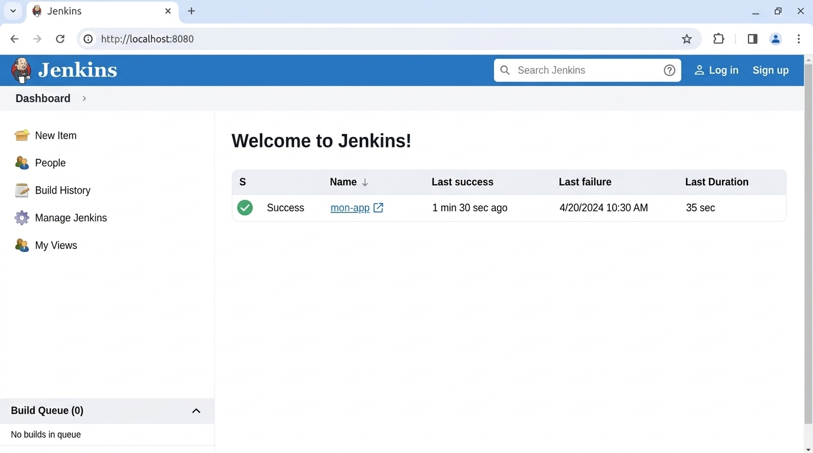

Rapport DevOps — Jenkins et déploiement Tomcat + Maven
Guide CI/CD — Master 2 Génie Logiciel
Auteur : Ibrahima Khalilou Thiam | Année 2025
Sommaire
1. Objectif
Jenkins est un orchestrateur CI/CD open source permettant d'automatiser le processus de build, test et déploiement. Ce guide montre comment :
- Installer Jenkins sur une machine Linux.
- Configurer Maven comme outil de build.
- Installer et configurer Apache Tomcat comme serveur d'applications.
- Créer un pipeline CI/CD automatisé avec un
Jenkinsfile. - Déployer automatiquement une application Java sur Tomcat.
2. Installation de Jenkins
Nous installons Jenkins sur une instance Linux (Ubuntu/Debian) :
Étape 1 — Installer Java (JDK 11+ requis) :
sudo apt update
sudo apt install -y openjdk-11-jdk
# Vérifier
java -versionÉtape 2 — Ajouter le dépôt Jenkins :
# Ajouter la clé du dépôt Jenkins
curl -fsSL https://pkg.jenkins.io/debian/jenkins.io-2023.key | sudo tee \
/usr/share/keyrings/jenkins-keyring-alpha.asc > /dev/null
echo deb [signed-by=/usr/share/keyrings/jenkins-keyring-alpha.asc] \
http://pkg.jenkins.io/debian-alpha binary/ | sudo tee \
/etc/apt/sources.list.d/jenkins.list > /dev/null
# Installer Jenkins
sudo apt update
sudo apt install -y jenkinsÉtape 3 — Démarrer Jenkins :
sudo systemctl enable jenkins
sudo systemctl start jenkins
sudo systemctl status jenkinsÉtape 4 — Récupérer le mot de passe initial :
sudo cat /var/lib/jenkins/secrets/initialAdminPassword
8080.
Assurez-vous qu'il est autorisé dans le Security Group (ou firewalld).
3. Configuration de Maven
Maven est l'outil de build Java le plus répandu. Jenkins peut l'utiliser de deux façons :
Méthode 1 — Via le plugin (recommandé) :
- Jenkins → Manage Jenkins → Tools.
- Cocher Install Maven automatiquement.
- Saisir un nom (ex.
Maven 3.9.4) et sélectionner la version.
Méthode 2 — Installation manuelle :
# Télécharger Maven
wget https://dlcdn.apache.org/maven/maven-3/3.9.4/binaries/apache-maven-3.9.4-bin.tar.gz
# Extraire
sudo tar -xzf apache-maven-3.9.4-bin.tar.gz -C /opt/
# Configurer les variables d'environnement
sudo tee /etc/profile.d/maven.sh << 'EOF'
export MAVEN_HOME=/opt/apache-maven-3.9.4
export PATH=$MAVEN_HOME/bin:$PATH
EOF
# Appliquer
source /etc/profile.d/maven.sh
mvn --versionpom.xml est le
fichier de configuration de Maven. Il définit les dépendances, les plugins et
les phases de build.
4. Installation de Tomcat
Apache Tomcat est un serveur d'applications Java (Servlet/JSP) sur lequel nous déploierons notre application.
Étape 1 — Télécharger et installer Tomcat :
# Télécharger Tomcat
wget https://dlcdn.apache.org/tomcat/tomcat-9/v9.0.80/bin/apache-tomcat-9.0.80.tar.gz
# Extraire
sudo tar -xzf apache-tomcat-9.0.80.tar.gz -C /opt/
sudo mv /opt/apache-tomcat-9.0.80 /opt/tomcat
# Configurer les variables d'environnement
sudo tee /etc/profile.d/tomcat.sh << 'EOF'
export CATALINA_HOME=/opt/tomcat
export JAVA_OPTS="-Djava.awt.headless=true -Xmx512m"
EOF
source /etc/profile.d/tomcat.shÉtape 2 — Démarrer Tomcat :
# Démarrer Tomcat
/opt/tomcat/bin/startup.sh
# Vérifier
curl http://localhost:8080
# Arrêter
/opt/tomcat/bin/shutdown.sh
8080 par défaut. Pour
changer, éditer /opt/tomcat/conf/server.xml.
5. Création d'un job Jenkins (Freestyle)
Nous allons créer un job Jenkins de type Freestyle Project pour compiler et packager une application Maven :
Étapes :
- Accéder à Jenkins → Nouveau projet → projet Freestyle.
- Nom :
build-webapp. - Dans Source Code Management, sélectionner Git et saisir l'URL du dépôt.
- Dans Build, ajouter une étape → Invoke top-level Maven targets :
# Goals Maven pour le build
clean packageÉtape de post-build :
- Ajouter E Build Results → Publisher.
- Ajouter Copier les artefacts sur le serveur de déploiement.

6. Pipeline CI/CD avec Jenkinsfile
Un Jenkinsfile est un script déclaratif qui définit le pipeline CI/CD sous forme de code (Infrastructure as Code). Il est placé à la racine du dépôt Git.
Jenkinsfile (Declarative Pipeline) :
pipeline {
agent any
tools {
maven 'Maven 3.9.4'
jdk 'Java 11'
}
stages {
stage('Checkout') {
steps {
git branch: 'main',
url: 'https://github.com/mon-orga/webapp.git'
}
}
stage('Build') {
steps {
sh 'mvn clean package'
}
}
stage('Test') {
steps {
sh 'mvn test'
}
post {
always {
junit '**/target/surefire-reports/*.xml'
}
}
}
stage('Deploy') {
steps {
sh 'cp target/*.war /opt/tomcat/webapps/'
}
}
}
}
7. Déploiement automatisé sur Tomcat
Le déploiement automatisé copie l'artefact .war généré par Maven directement
dans le répertoire webapps de Tomcat.
# Pipeline — stade de déploiement
stage('Deploy') {
steps {
sshagent(['tomcat-server-key']) {
sh 'scp target/myapp.war ec2-user@<IP_TOMCAT>:/opt/tomcat/webapps/'
}
}
}
# Redémarrer Tomcat pour prendre en compte le nouveau WAR
ssh ec2-user@<IP_TOMCAT> '/opt/tomcat/bin/shutdown.sh && /opt/tomcat/bin/startup.sh'Via le Manager de Tomcat (alternatif) :
# Utiliser le gestionnaire Tomcat
# http://<IP>:8080/manager/text/deploy?path=/myapp
curl -u admin:password \
--upload-file target/myapp.war \
"http://<IP>:8080/manager/text/deploy?path=/myapp&force=true"8. Bonnes pratiques Jenkins
- Security par défaut : Activez l'authentification et utilisez Role-Based Access Control (RBAC) pour limiter l'accès.
- Credentials sécurisés : Stockez les mots de passe et clés SSH dans Jenkins Credentials Store, jamais en clair dans les jobs.
- Pipeline en tant que code : Utilisez un
Jenkinsfileversionné dans Git pour un pipeline reproductible et auditable. - Tests automatisés : Intègrez les tests unitaires (
mvn test) dans le pipeline avant le déploiement. - Agents distants : Utilisez des agents (slaves) pour exécuter les builds en parallèle et isoler les environnements.
- Nettoyage des artefacts : Configurez la conservation des builds pour éviter de saturer le disque.
- Sécurité des plugins : Ne pas installer de plugins non officiels. Tenez Jenkins à jour.
9. Checklist imprimable
- [ ] Java JDK 11+ installé
- [ ] Jenkins installé et démarré
- [ ] Mot de passe initial récupéré
- [ ] Plugins essentiels installés (Git, Maven, SSH)
- [ ] Maven configuré dans Jenkins (Global Tool)
- [ ] Tomcat installé et accessible
- [ ] Credentials SSH stockés dans Jenkins
- [ ] Jenkinsfile créé et versionné
- [ ] Pipeline testé (Build → Test → Deploy)
- [ ] Authentification et RBAC activés
10. Conclusion
Ce guide a présenté la mise en place complète d'une chaîne CI/CD avec Jenkins :
- Installation de Jenkins et configuration de Maven comme outil de build.
- Installation d'Apache Tomcat comme serveur d'applications Java.
- Création de jobs Freestyle et pipeline déclaratif avec
Jenkinsfile. - Déploiement automatisé d'une application Java ( WAR) sur Tomcat.